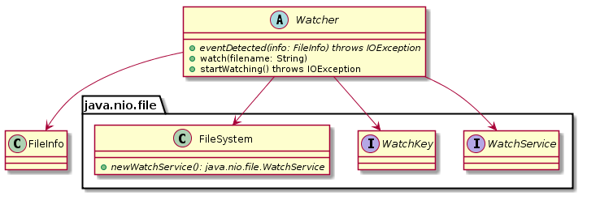

public interface Watcher
Interface for watching for changes on the file that needs to be tailed. Is only to be used when the switch '-f' is used.
| Modifier and Type | Method and Description |
|---|---|
void |
eventDetected(FileInfo info) |
void |
startWatching() |
void |
watch(FileInfo fileInfo) |